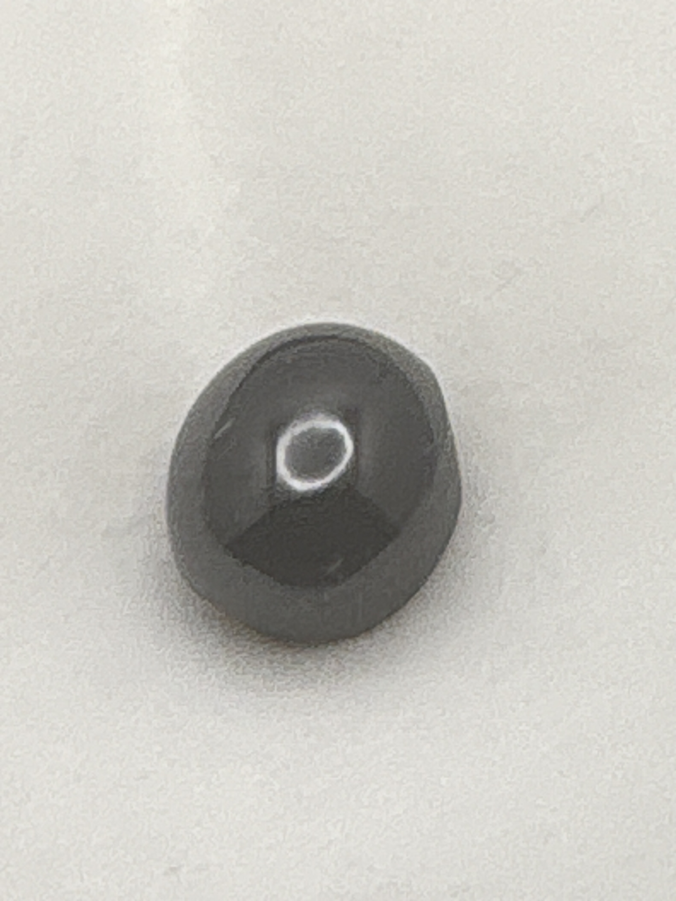

The Gem Drawer › No. 76

A near-black domed cabochon showing a clear four-rayed star.
| Catalogue no. | #76 |
|---|---|
| As labeled | Star Garnet (asterism clearly visible in photo) |
| Shape / cut | Cabochon (round, domed) |
| Weight | Not recorded |
| Measurements | Not recorded |
| Colour | Very dark/near-black (typical for star garnet) |
| Clarity / condition | Not recorded |